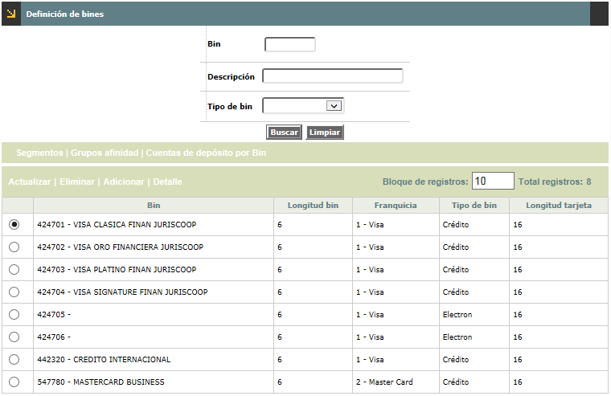
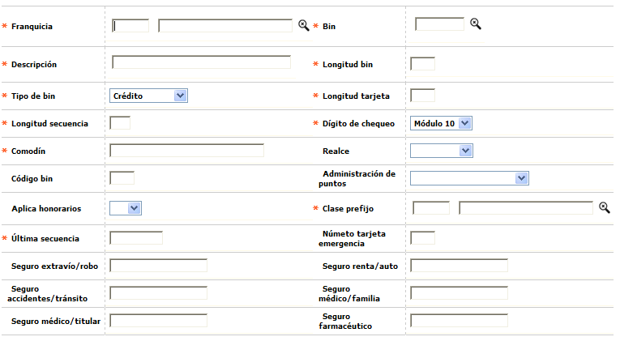
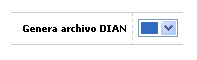
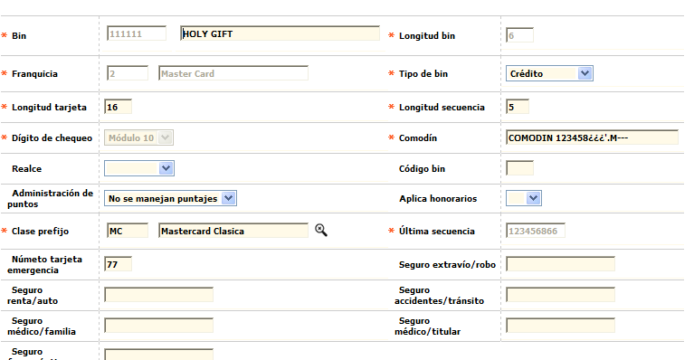

Definición de bines |
Mediante esta opción se permite parametrizar todas las características que definen cada uno de los productos y líneas de crédito ofrecidos por la entidad financiera o comercial, incluso los de marca privada. Un producto se constituye por la relación Bin-Segmento-Grupo de Afinidad y a cada uno de estos se le puede o no asociar la(s) líneas de crédito, a través de la opción productos, acorde a las políticas de la entidad financiera o comercial. Cuando se invoca desde el módulo de Tarjeta Débito no se despliega el tab Lineas de Crédito por cuanto este concepto no aplica para este tipo de producto; puede invocarse también desde el módulo Medios de pago.
El formulario contiene las opciones Actualizar, Eliminar, Adicionar y Detalle. Adicionalmente, cuenta con los vínculos para ir a Segmentos, Grupos de afinidad, y Cuentas de depósito por bin.

Definición de bines: En este opción se ingresan manualmente todos y cada uno de los prefijos o bines utilizados por la entidad basándose en la información contenida en la pantalla Bines nacionales de las Tablas corporativas del Núcleo, a excepción, entre otros datos de los campos Longitud secuencia y Ultima secuencia. Los campos precedidos de la palabra Seguro y que sólo se despliegan cuando la forma es invocada desde el módulo de Mercadeo, son utilizados en la Web para generar cartas de presentación de los clientes ante autoridades diplomáticas, principalmente. Dependiendo de la opción desde donde sea invocada despliega los bines correspondientes a las tarjetas de crédito o débito u Otros Medios de Pago ingresados previamente en el sistema.
Adicionar: Si el usuario invoca la opción Adicionar se despliega un formulario con los siguientes campos:

Bin |
En estos dos campos se deben ingresar respectivamente el Código y la Descripción del nuevo Bin. Código: En este campo la entidad identifica la clase de bin con los cuales será posible operar con la franquicia correspondiente. Descripción: Campo en el que se registra el nombre o descriptivo asociado al BIN. |
Longitud bin |
Campo numérico de un dígito, obligatorio, en el cual se registra la cantidad de dígitos que hacen parte del número de la tarjeta y que identifican a cada uno de los bines. |
Franquicia |
En este campo obligatorio, se selecciona de la lista de valores la marca o Franquicias a la cual se asocia el código o prefijo. |
Tipo de bin |
Este campo obligatorio posee lista de valores adjunta de la cual se selecciona la característica de operación del bin y que dependiendo del módulo desde el cual es invocada la opción puede presentar los siguientes valores: si se hace desde el módulo de Mercadeo permite seleccionar entre Crédito o Crédito Propio; cuando se invoca desde el módulo de Tarjeta Débito los posibles valores son Electron, Débito o Débito Propio; finalmente, si el llamado de esta opción se hace desde el módulo Medios de Pago los valores que permite seleccionar son Virtual, Prepago, Regalo o Visa Pagos. |
Longitud tarjeta |
En este campo numérico de dos dígitos, obligatorio, se registra la cantidad total de dígitos que componen el número de la tarjeta. |
Longitud secuencia |
Este campo numérico de dos dígitos, obligatorio, permite registrar el número de dígitos que hacen parte de la tarjeta y que corresponden a la secuencia de emisión de cada una de ellas. Es necesario tener en cuenta que la sumatoria de la longitud de la secuencia, el bin, la subserie, el código oficina y el dígito de chequeo debe ser igual a la Longitud de la Tarjeta; por lo anterior si la entidad desea que en el número de la tarjeta se incluyan la subserie o el código de oficina, la longitud de estos datos se debe considerar al momento de determinar la longitud de la secuencia. |
Dígito de chequeo |
Campo obligatorio, en el que se selecciona de la lista de valores adjunta la rutina que calcula el último dígito de la tarjeta o de verificación. |
Comodín |
En este campo alfanumérico de 23 dígitos, obligatorio, se registra un número genérico que permite la captura de movimiento cuando el número de la tarjeta no es legible en los comprobantes manuales. |
Realce |
Campo que posee lista de valores adjunta de la cual se selecciona entre Local o Franquicia, lo que implica si el realce de los plásticos lo lleva a cabo la entidad con sus proveedores o directamente la franquicia. |
Código bin |
En este campo se registra el código del prefijo (BIN), utilizado por algunas entidades para poder diferenciar los registros correspondientes en el archivo de Débitos automáticos. |
Administración de puntos |
Campo que aplica cuando existen esquemas de puntaje en la entidad, y permite indicar si la administración de dichos puntos está a cargo del sistema o es la franquicia quien se encarga de ello, como es el caso del producto Platinum; en caso de no existir programas de puntajes o millas para el producto, la opción a elegir debe ser No se manejan puntos. |
Aplica honorarios |
En este campo la entidad define, por producto, si dentro de los saldos adeudados por el cliente, se le incluye lo correspondiente a Honorarios de abogado cuando la obligación ha estado o se encuentra actualmente en cobro prejurídico o jurídico. |
Clase prefijo |
Este campo posee lista de valores poblada a través de la opción Franquicias, de la que puede seleccionarse la clase de prefijo a la que corresponde el bin que se ha definido. |
Última secuencia |
Campo de salida en el que se refleja el último número de tarjeta asignado para ese bin, facilitando el control de inventarios. |
Número tarjeta emergencia |
Campo que permite definir la cantidad de tarjetas que la entidad se reserva o requiere mantener como stock, por cada producto, para ser utilizadas en el exterior con características propias de tarjetas de emergencia. |
Seguro extravío/robo |
Sólo aplica y se despliega cuando la opción es invocada desde el módulo de Mercadeo. Campo numérico de 12 enteros y 2 decimales, no obligatorio, en el que la entidad puede relacionar el valor máximo en US$ Dólares por el cual se encuentra amparado el titular de la tarjeta que pertenece a éste Bin, mediante la póliza de seguro de asistencia al viajero en casos de robo o extravío del plástico, permitiéndole el acceso a las Centrales de Alarma correspondientes. |
Seguro renta/auto |
Se despliega y aplica únicamente cuando la opción es invocada desde el módulo de Mercadeo. Campo numérico de 12 enteros y 2 decimales, no obligatorio, en el que la entidad puede relacionar el valor máximo en US$ Dólares por el cual se encuentra amparado el titular de la tarjeta que pertenece a éste Bin, mediante la póliza de seguro de asistencia internacional al viajero en casos de siniestros derivados de la renta de autos en el extranjero (solo si el pago se efectúa con la tarjeta de crédito Master Card). |
Seguro accidentes/tránsito |
Sólo aplica y se despliega cuando la opción es invocada desde el módulo de Mercadeo. Campo numérico de 12 enteros y 2 decimales, no obligatorio, en el que la entidad puede relacionar el valor máximo en US$ Dólares por el cual se encuentran amparados el titular de la tarjeta que pertenece a éste Bin, su cónyuge e hijos menores de 23 años, en Colombia y en el exterior bien sea que viajen juntos o separados (vía aérea, marítima o terrestre), mediante la póliza de seguro de asistencia al viajero en casos de siniestros derivados de accidentes de tránsito (solo si la totalidad del pago de los tiquetes se efectúa con la tarjeta de crédito Master Card). |
Seguro médico/familia |
Se despliega y aplica únicamente cuando la opción es invocada desde el módulo de Mercadeo. Campo numérico de 12 enteros y 2 decimales, no obligatorio, en el que la entidad puede relacionar el valor máximo en US$ Dólares por el cual se encuentran amparados los hijos menores de 23 años y padres que dependan económicamente del titular de la tarjeta que pertenece a éste Bin (solo aplica para tarjetas de crédito Visa), en Colombia y en el exterior viajando juntos o separados, mediante la póliza de seguro de asistencia médica en viajes. |
Seguro médico/titular |
Sólo aplica y se despliega cuando la opción es invocada desde el módulo de Mercadeo. Campo numérico de 12 enteros y 2 decimales, no obligatorio, en el que la entidad puede relacionar el valor máximo en US$ Dólares por el cual se encuentra amparado el titular de la tarjeta que pertenece a éste Bin (solo aplica para tarjetas de crédito Visa), en Colombia y en el exterior, mediante la póliza de seguro de asistencia médica en viajes. |
Seguro farmecéutico |
Se despliega y aplica únicamente cuando la opción es invocada desde el módulo de Mercadeo. Campo numérico de 12 enteros y 2 decimales, no obligatorio, en el que la entidad puede relacionar el valor máximo en US$ Dólares por el cual se encuentran amparados por gastos farmacéuticos el titular de la tarjeta que pertenece a éste Bin (solo aplica para tarjetas de crédito Visa), los hijos menores de 23 años y padres que dependan económicamente del mismo, en el exterior viajando juntos o separados, mediante la póliza de seguro de asistencia médica en viajes. |
Adicionalmente, este formulario cuenta con un globo de localización que mostrará el siguiente campo:

Genera archivo DIAN |
Campo que posee lista de valores que permite seleccionar si para este BIN se genera o no archivo para la DIAN. Con el fin de obtener los correspondientes reintegros de IVA. |
Actualizar: Si el usuario invoca la opción Actualizar se despliega un nuevo formulario en el cual los únicos campos modificables son: Descripción del Bin, Franquicia, Tipo de bin, Longitud tarjeta, Longitud secuencia, Dígito de chequeo, Comodín, Realce, Código bin, Administración de puntos, Aplica honorarios, Clase prefijo, Número tarjeta emergencia, Seguro extravío/robo, Seguro renta/auto, Seguro accidentes/tránsito, Seguro médico/familia, Seguro médico/titular, y Seguro farmecéutico.
Adicionalmente, este formulario también cuenta con un globo de localización que mostrará el campo Genera archivo DIAN para modificar.

Detalle: Si el usuario invoca la opción Detalle se despliega el siguiente formulario:
Segmentos | Grupos de afinidad | Cuentas de depósito por bin